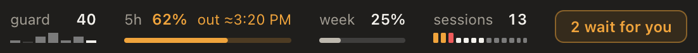
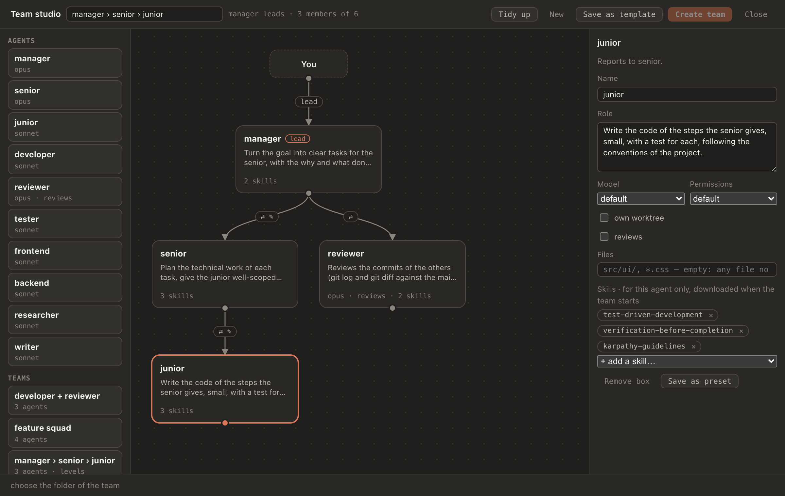
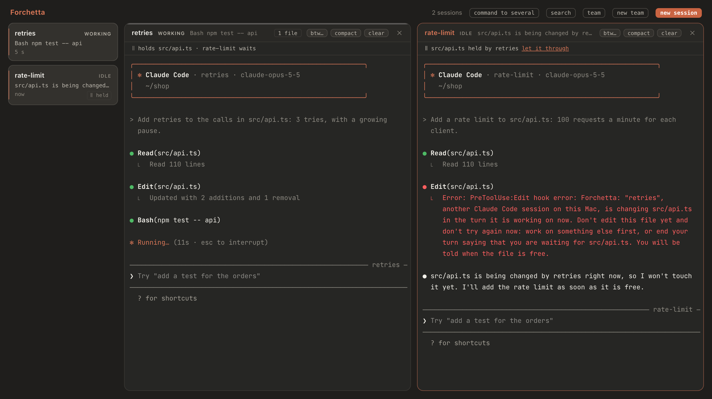

Changelog
The versions that changed what Forchetta does, newest first, with the commits that did it.
-
Windows, no longer a beta
The branch
windowscomes back into main. Forchetta runs on Windows itself, with no WSL and no administrator, next to the Claude Code you have: one command in PowerShell installs it, and a click updates it. The installer tries again when Windows still holds a folder, and never leaves the hooks without a Node.js. On Linux and in WSL the same version is a beta. -
0.13.0-beta.4 to 0.13.0-beta.8 branch
windowsOne click to update, on Windows too
The window says when there is a new version and installs it, with the installer of the release. With it, what 0.12.8 has on a Mac: the boxes where you drag them, your messages marked, a plain terminal (PowerShell or Git Bash) in the folder of a session, the scheduled tasks of the Claude app.
forchetta.cmdtakes nonode.exefrom the folder it is typed in. In beta.5 the ✕ of a narrow pane always shows. In beta.6 a terminal that opens shows all of its screen. In beta.7 the window and the Start menu have the fork, and what you copy from a pane on Linux comes as 0.12.10 has it on a Mac. In beta.8 Forchetta opens when you sign in to Windows, if you tick it in Settings.2124940Windows: open Forchetta when you sign in, from Settings8f48386The window and the Start menu have the fork0b07864A window that opens loses nothing of what is drawn7da8eb9The header of a pane folds, and its close button always showsd697288Order of the boxes, your messages, plain terminals, scheduled taskse503ea1A new version installs with one clickd60878eOn Windows and Linux too, with the installer of the releasec9fb8a1A plain terminal closes with all it started
-
Your order, your messages, your shell
The boxes go where you drag them, and stay there. Your messages have a bar on their left in the terminals. A plain terminal opens in the folder of a session. The scheduled tasks of the Claude app show, and start from here. The sessions restart on a new Claude Code all together, each on its conversation. Shift+Enter is a new line, and only that. From here on a new version is one click, in the window. In 0.12.9 the ✕ of a narrow pane always shows: what has no room is in ⋯. In 0.12.10 what you copy from a pane keeps its accents, and leaves out the signs of Claude Code. In 0.12.11 Forchetta opens when you log in, if you tick it in Settings.
a9cf7d1Open Forchetta when you log in, from Settings8a30d82What you copy from a pane is in UTF-8, without the signs of Claude Code7da8eb9The header of a pane folds, and its close button always showse503ea1A new version installs with one clickd697288Order of the boxes, your messages, plain terminals, scheduled tasks3bfdb88Sessions restart on a new version of Claude Code, all together9fabdddShift+Enter in a terminal is a new line, and only that3033b46A session at rest with a shell in the background is at rest
-
0.13.0-beta.3 branch
windowsThe first reports from a PC
The hooks no longer stop when Node.js is updated: where an update would move it, Forchetta gets a Node.js of its own. Shift+Enter in a terminal is a new line. Setup tells a script when nothing was applied. To update, run the command of the install again.
-
0.13.0-beta.2 branch
windowsOn Windows itself
No WSL, no Ubuntu, no administrator: one command in PowerShell. Forchetta runs next to the Claude Code you have, which sees what it sees now, devices connected to the PC included. Each session it starts has a host of its own, in place of tmux. The guard reads PowerShell, and the paths of Windows. Its tests run on three Windows; no one had used it on a PC of their own yet.
-
The counts at the top, as small instruments
The line at the top of the window was text. Now each count is a number over its marks: a column for each day of the guard, a bar for each limit of your plan, a mark for each session. The sessions that need you stand taller than the others.

14a5f140.12.7: the counts of the top line as small instruments
-
0.13.0-beta.1 branch
windowsWindows and Linux, to try
Forchetta runs on Linux, and on Windows inside WSL 2, where it opens in a window of Edge or Chrome. GitHub builds the archive from the source and signs it, and the installer takes no other.
-
The guard reads the shell
In auto mode Claude often changes files with Bash. The guard now reads the files a command writes from its line, holds a file from the moment a write is let through, stops a formatter that would rewrite a file another session is changing, and takes a here-document as text unless a shell reads it.
What Claude Code changes with Bash, in numbers
ad3eb200.12.6: the guard reads a here-document as text, unless it is for a shellf5eae100.12.5: the guard stops the formatters that would rewrite a held file5bf51600.12.4: two sessions that try the same file at the same moment, only one goes072c2850.12.3: the guard sees the changes made with a command too
-
Your sessions, back after a restart of the Mac
A restart closes every session; their conversations stay. Forchetta finds the sessions that ended with the Mac and reopens them, each in its folder, with its name, color and model. A member of a team goes back into its team.
After a restart, in the manual
7d7d6720.12.1: the sessions come back after a restart of the Mac
-
A team that starts by itself
From a queue, at a time, or from GitHub: the open issues with a label, or the pull requests. Each run is a new team, with what it may cost and how long it may take. It is over when its lead delivers; a run that fails pauses the automation until you resume it.
A team that starts by itself, in the manual
141fd260.12.0: a team that starts by itself
-
What each agent may use, and where you say yes
Limits on the tools of one agent, MCP servers for it alone, and arrows that wait for your approval. A team takes parameters and a first goal, says when it delivers, and its run can be replayed. Before it starts, the studio points out what in it works against itself.
-
Teams in the repository, a ledger, and ⌘K
A team is a file, reviewed with the code, that also starts from a terminal or a script. A local ledger keeps what each turn did and cost, and
forchetta reportreads it. Settings in the app, a palette of commands, shortcuts, keyboard and screen reader, a light theme, andforchetta doctor.eb3da6b0.10.0: teams in the repository, ledger and report, Settings, ⌘K and shortcuts, accessibility and the light theme, doctor
-
The hooks on a private socket
The hooks of Claude Code reach the daemon on a socket only your user can open: with the daemon stopped, no other program can answer the guard or the permissions in its place. The skills that come with a team file are shown before they are fetched.
a4eff4b0.9.13: the hooks on a private socket, the skills of a team file seen before they are fetched, no data lost
-
The studio, live and in your browser
Opened while a team works, the studio says what each agent does and what goes along each arrow. A team can be saved as a file, with the rules every agent follows. Studio Maker draws one in the browser, with nothing to install.
42788c90.9.12: “+ new”, teams grouped in the column, the studio live, rules, team files, Studio Maker
-
Draw a team: the studio
A canvas where each agent is a box, and an arrow says who leads whom and who answers. Teams have as many levels as they need. Skills come from open-source repositories, each pinned to a commit. Then undo, and what a team costs, agent by agent.

-
Files of its own for each agent, and a review that counts
The guard keeps a member in its files and the others out of them, and asks you before a merge of commits the reviewer did not approve. A session that fails the same way three times in a row is pointed out. A team can be set up from a document that describes it.
-
The guard says what the others did
A session is told when a file it read was changed by another one, and which lines. Before tests it learns who is halfway through what. A
git add -Athat would take another session’s changes is stopped once.bc6092c0.9.5: the guard tells each session what the others did
-
The guard
A session holds the file it is changing until its turn ends. Another one that tries to edit it is stopped, is told why, and goes on by itself when the file is free. A git command that would change the files under another session asks you first.

-
Closer to each session
The artifacts a session publishes open from its box. Text selected in a terminal becomes a question, to that session or to another one. The subagents of a session are listed as they work, each with its transcript.
-
Teams of agents
A lead and its members, each a Claude Code session with a name and a role. An arrow says what comes back: ⇄ its answer goes to the lead, → it does the work and sends nothing. Requests are numbered and wait until a session is free, and a member can work in a git worktree of its own.
Teams of agents, in the manual
a585edd0.8.0: teams of agents, and the manual on the site
-
Installed with Homebrew
No clone to make:
brew install, thenforchetta setup, which builds the app on your Mac and shows every change to your settings first. The app speaks English, in the colors it has today. -
The first public version
Every Claude Code session on the Mac as a box in one window: what it is doing, its context, its cost. Up to four open side by side in real terminals. Permissions answered from the box, and a notification when a session waits, stalls or fails.
fee81f20.6.0: first public version
These are the versions that matter most. Every release, with its full notes, is on GitHub, also as a feed. Before 0.12.4 the messages of the commits are in Italian: here they are in English.